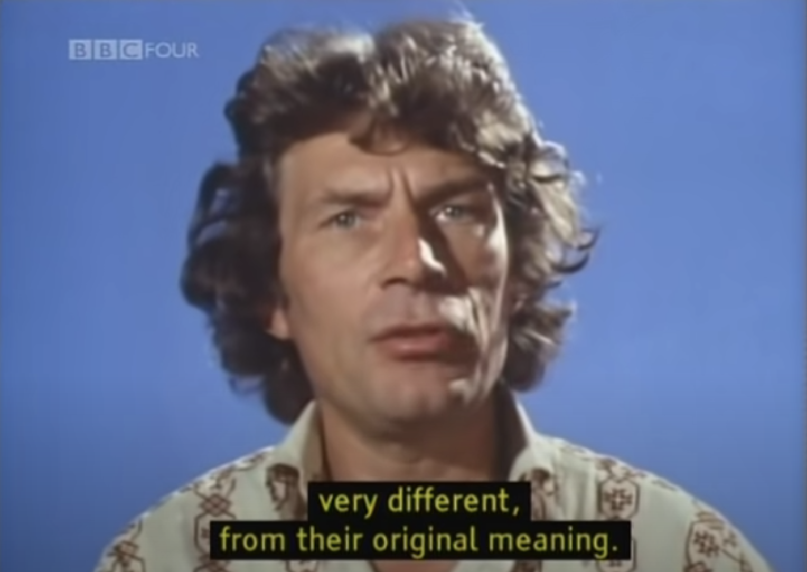
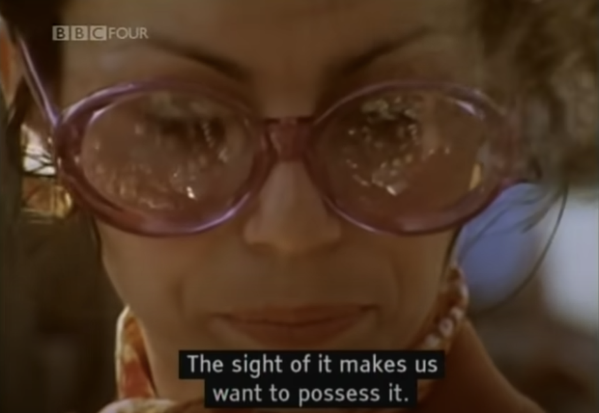
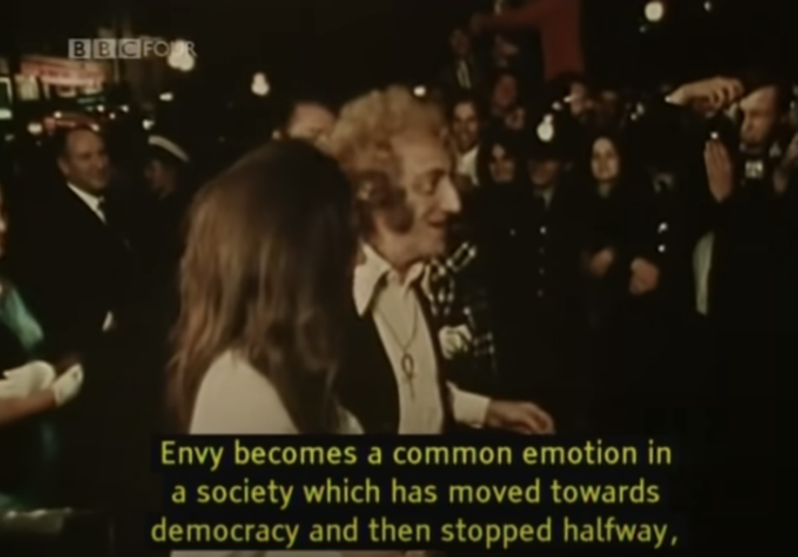

Part 1: I found the part where Berger talked about reproduction of content really interesting. It was cool to see how the meaning of the image can change with how it is cropped, what music is playing in the background, and how camera focuses on certain part. I realized that images loses its inherent value with reproduction.
"I think we are always dressing up for a part"

The episode really made me question "What makes material so desirable and why do people get obsessed with it?" I thought that it is not the inherent value of the object(what it does in life) but rather the implications(the brand, the image it implies) that the object holds. For example, using a particular type of cologne makes you seem much presitigous.

I found this part to be thought-provoking. Today, social media like instagram makes us envy one another by the fake glamour we create and make ourselves unconsciously compare our lives to other people's lives. This is because the position of glamour is opened to anyone, but only enjoyed by a few.